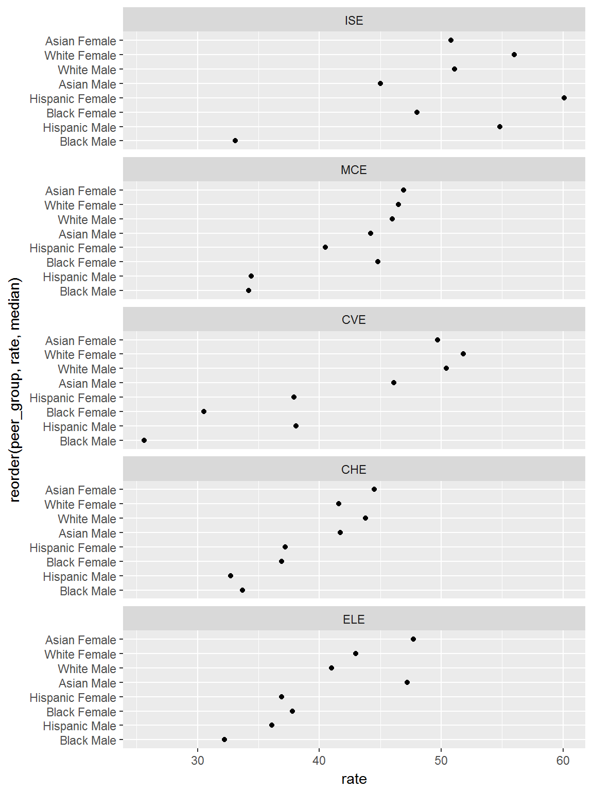
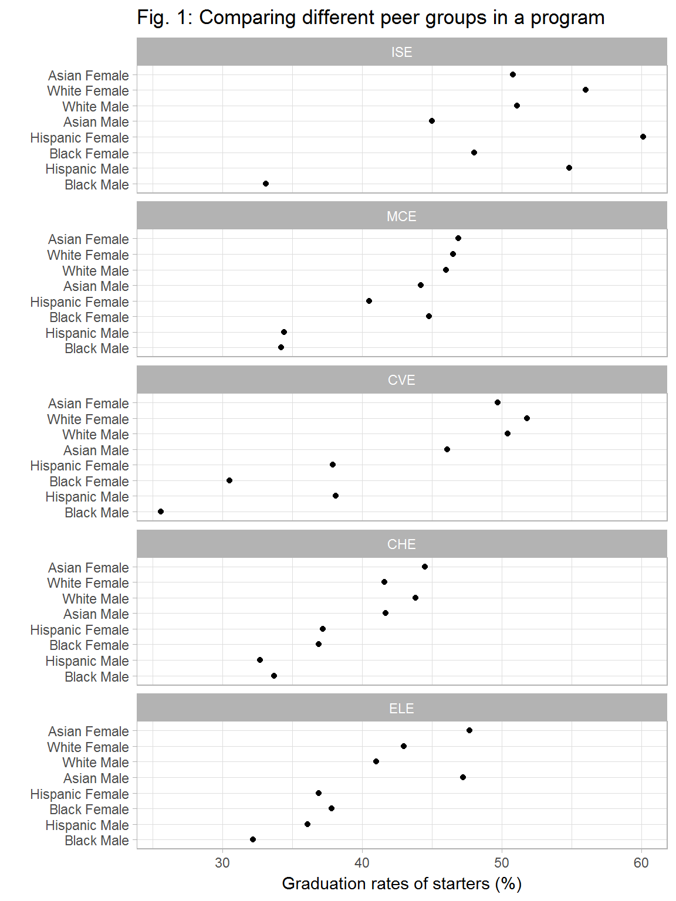
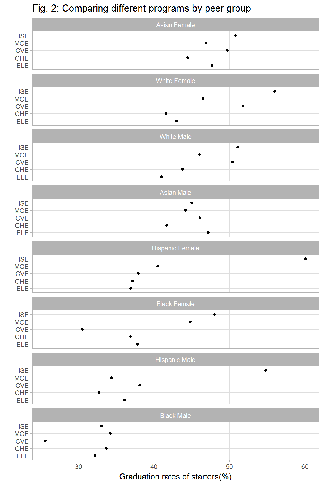

Graphing graduation rates
Graduation rate is the percentage of students starting in a program that graduate in that program. (This metric, while commonly used, fails to account for program graduates who matriculate in other programs.)
The packages we’ll use in this vignette:
# packages for manipulating and graphing data
library(dplyr)
library(ggplot2)
library(tibble)
library(tidyr)Data
For this example, we use a tidy data set case_gradrate disaggregated by sex, ethnicity, and engineering program with 40 observations and 6 variables. The example data are provided with the midfieldr package.
# to obtain the example case data
library(midfieldr)Start with a look at the example data.
# examine the data structure
glimpse(case_gradrate)
#> Observations: 40
#> Variables: 6
#> $ program <chr> "CHE", "CHE", "CHE", "CHE", "CHE", "CHE", "CHE", "CH...
#> $ ethnicity <chr> "Asian", "Black", "Hispanic", "White", "Asian", "Bla...
#> $ sex <chr> "Female", "Female", "Female", "Female", "Male", "Mal...
#> $ start <dbl> 422, 1211, 199, 3533, 721, 831, 327, 7239, 185, 515,...
#> $ grad <dbl> 188, 447, 74, 1470, 301, 280, 107, 3174, 92, 157, 66...
#> $ rate <dbl> 44.5, 36.9, 37.2, 41.6, 41.7, 33.7, 32.7, 43.8, 49.7...To see the help page for this sample dataset,
?case_gradrateWe create peer_group, a new categorical variable that combines ethnicity with sex.
case_gradrate <- case_gradrate %>%
unite(peer_group, c(ethnicity, sex), sep = " ")
glimpse(case_gradrate)
#> Observations: 40
#> Variables: 5
#> $ program <chr> "CHE", "CHE", "CHE", "CHE", "CHE", "CHE", "CHE", "C...
#> $ peer_group <chr> "Asian Female", "Black Female", "Hispanic Female", ...
#> $ start <dbl> 422, 1211, 199, 3533, 721, 831, 327, 7239, 185, 515...
#> $ grad <dbl> 188, 447, 74, 1470, 301, 280, 107, 3174, 92, 157, 6...
#> $ rate <dbl> 44.5, 36.9, 37.2, 41.6, 41.7, 33.7, 32.7, 43.8, 49....The five engineering programs are
- CHE Chemical Engineering
- CVE Civil Engineering
- ELE Electrical Engineering
- ISE Industrial and Systems Engineering
- MCE Mechanical Engineering
Every peer group has a graduation rate in every program. Data with this structure are called “multiway” data and are displayed using multiway graphs1. The multiway data are:
-
program, a categorical variable (unordered or “nominal”) with 5 levels: Chemical Engineering, Civil Engineering, etc. -
peer_group, a categorical variable (nominal) with 8 levels: Asian Female, White Female, etc. -
rateis the graduation rate, a quantitative continuous variable between 0% and 100%
Multiway
We start by displaying rates by peer group, conditioned by program.
basic_fig <- ggplot(data = case_gradrate, aes(y = peer_group, x = rate)) +
facet_wrap(~ program, ncol = 1L) +
geom_point()
print(basic_fig)
The multiway graph is obtained by ordering the panels and rows.
- Panels are ordered such that the program median rates increase from bottom to top.
- Peer groups (rows) are ordered such that the peer group median rates increase from bottom to top.
# order the rows and panels
multiway1 <- basic_fig +
aes(y = reorder(peer_group, rate, median), x = rate) +
facet_wrap(~ reorder(program, -rate, median), ncol = 1L)
print(multiway1)
Adding some minimal formatting completes the display.
multiway1 <- multiway1 +
labs(title = 'Fig. 1: Comparing different peer groups in a program',
y = '', x = 'Graduation rates of starters (%)') +
theme_light()
print(multiway1)
Visual comparisons are most easily made within a panel. Thus this graph facilitates comparing the graduation rates of different peer groups in a program.
Dual multiway
Every multiway has a dual form obtained by swapping the rows and panels. Here, the dual form facilitates comparing the graduation rates of a peer group in different programs.
# swap rows and panels
multiway2 <- multiway1 +
aes(y = reorder(program, rate, median), x = rate) +
facet_wrap(~ reorder(peer_group, -rate, median), ncol = 1L) +
labs(title = 'Fig. 2: Comparing different programs by peer group',
y = '', x = 'Graduation rates of starters(%)')
print(multiway2)
Data tables
Data tables are useful when one needs an exact number for developing the narrative about the graph. To facilitate discussion among collaborators, row numbers can be included in the table (row.names = TRUE argument).
The first table shows the three multiway variables in an easy-to-read “wide” form.
# wide form for ease of reading
gradrate_table1 <- case_gradrate %>%
select(peer_group, program, rate) %>%
spread(program, rate)
# print the table
kable(gradrate_table1, caption = 'Table 1: Graduation rates of starters', row.names = TRUE)| peer_group | CHE | CVE | ELE | ISE | MCE | |
|---|---|---|---|---|---|---|
| 1 | Asian Female | 44.5 | 49.7 | 47.7 | 50.8 | 46.9 |
| 2 | Asian Male | 41.7 | 46.1 | 47.2 | 45.0 | 44.2 |
| 3 | Black Female | 36.9 | 30.5 | 37.8 | 48.0 | 44.8 |
| 4 | Black Male | 33.7 | 25.6 | 32.2 | 33.1 | 34.2 |
| 5 | Hispanic Female | 37.2 | 37.9 | 36.9 | 60.1 | 40.5 |
| 6 | Hispanic Male | 32.7 | 38.1 | 36.1 | 54.8 | 34.4 |
| 7 | White Female | 41.6 | 51.8 | 43.0 | 56.0 | 46.5 |
| 8 | White Male | 43.8 | 50.4 | 41.0 | 51.1 | 46.0 |
The second table shows the data in “tidy” form, that is, one observation per row with one variable per column. The table is longer than the previous table but includes the counts of start and grad from which the rates are computed.
# tidy form for viewing all the variables
gradrate_table2 <- case_gradrate %>%
arrange(program, peer_group)
# print the table
kable(gradrate_table2, caption = 'Table 2: The case_gradrate data set', row.names = TRUE)| program | peer_group | start | grad | rate | |
|---|---|---|---|---|---|
| 1 | CHE | Asian Female | 422 | 188 | 44.5 |
| 2 | CHE | Asian Male | 721 | 301 | 41.7 |
| 3 | CHE | Black Female | 1211 | 447 | 36.9 |
| 4 | CHE | Black Male | 831 | 280 | 33.7 |
| 5 | CHE | Hispanic Female | 199 | 74 | 37.2 |
| 6 | CHE | Hispanic Male | 327 | 107 | 32.7 |
| 7 | CHE | White Female | 3533 | 1470 | 41.6 |
| 8 | CHE | White Male | 7239 | 3174 | 43.8 |
| 9 | CVE | Asian Female | 185 | 92 | 49.7 |
| 10 | CVE | Asian Male | 464 | 214 | 46.1 |
| 11 | CVE | Black Female | 515 | 157 | 30.5 |
| 12 | CVE | Black Male | 1056 | 270 | 25.6 |
| 13 | CVE | Hispanic Female | 174 | 66 | 37.9 |
| 14 | CVE | Hispanic Male | 538 | 205 | 38.1 |
| 15 | CVE | White Female | 2836 | 1468 | 51.8 |
| 16 | CVE | White Male | 11891 | 5989 | 50.4 |
| 17 | ELE | Asian Female | 342 | 163 | 47.7 |
| 18 | ELE | Asian Male | 2256 | 1064 | 47.2 |
| 19 | ELE | Black Female | 1291 | 488 | 37.8 |
| 20 | ELE | Black Male | 3355 | 1079 | 32.2 |
| 21 | ELE | Hispanic Female | 130 | 48 | 36.9 |
| 22 | ELE | Hispanic Male | 805 | 291 | 36.1 |
| 23 | ELE | White Female | 1520 | 654 | 43.0 |
| 24 | ELE | White Male | 14024 | 5750 | 41.0 |
| 25 | ISE | Asian Female | 252 | 128 | 50.8 |
| 26 | ISE | Asian Male | 524 | 236 | 45.0 |
| 27 | ISE | Black Female | 754 | 362 | 48.0 |
| 28 | ISE | Black Male | 834 | 276 | 33.1 |
| 29 | ISE | Hispanic Female | 148 | 89 | 60.1 |
| 30 | ISE | Hispanic Male | 356 | 195 | 54.8 |
| 31 | ISE | White Female | 2027 | 1136 | 56.0 |
| 32 | ISE | White Male | 3987 | 2039 | 51.1 |
| 33 | MCE | Asian Female | 179 | 84 | 46.9 |
| 34 | MCE | Asian Male | 1313 | 581 | 44.2 |
| 35 | MCE | Black Female | 634 | 284 | 44.8 |
| 36 | MCE | Black Male | 2001 | 684 | 34.2 |
| 37 | MCE | Hispanic Female | 116 | 47 | 40.5 |
| 38 | MCE | Hispanic Male | 832 | 286 | 34.4 |
| 39 | MCE | White Female | 2439 | 1135 | 46.5 |
| 40 | MCE | White Male | 19482 | 8953 | 46.0 |
William S. Cleveland (1993) Visualizing Data, Hobart Press, Summit:NJ.↩